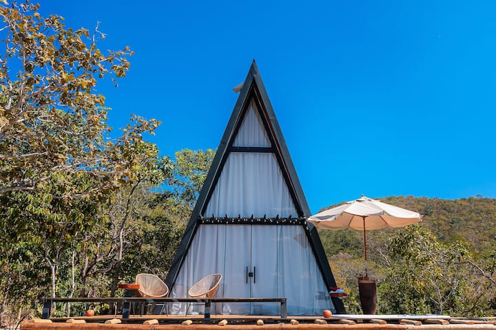
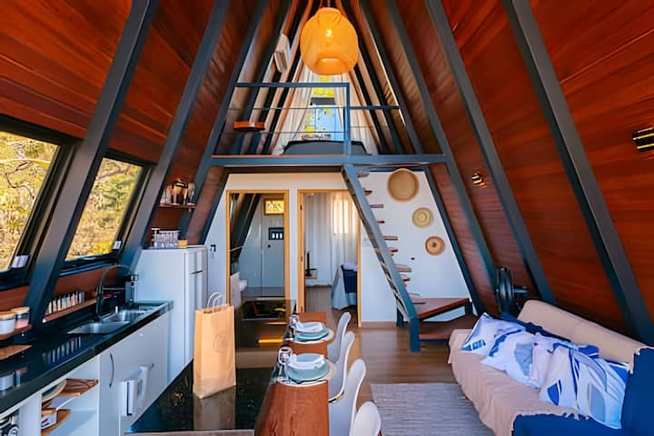
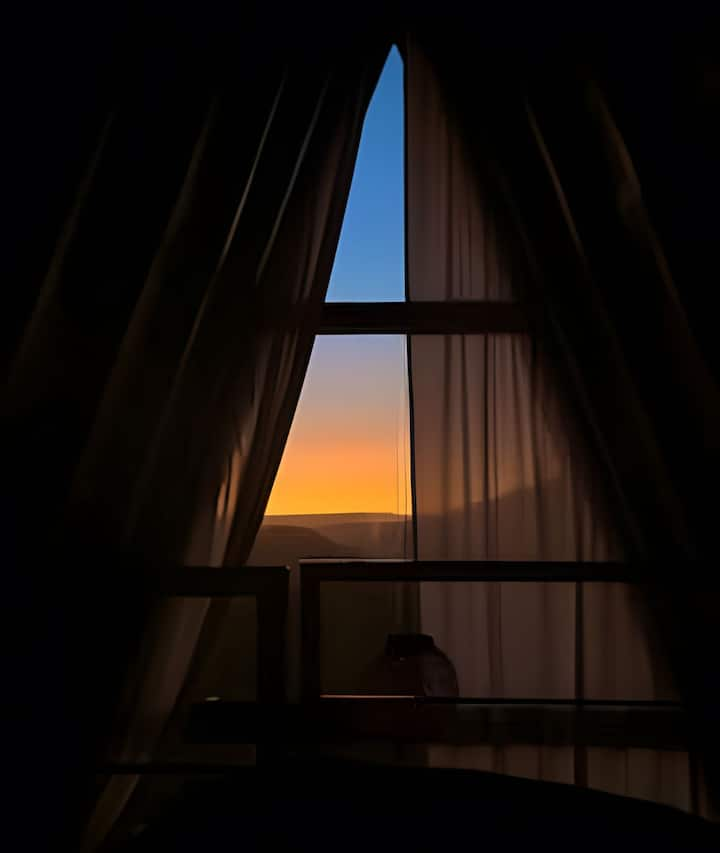
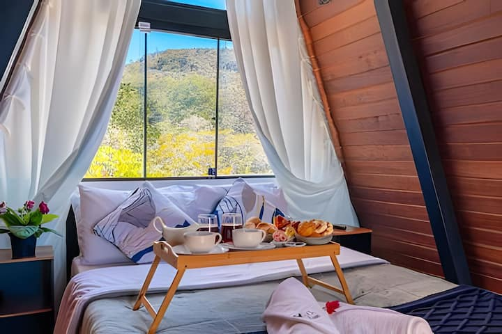

“a vista das montanhas é perfeita”
Nuno RattesAvaliação no Google

PIRENÓPOLIS, GOIÁS · CASA DOS VENTOS
Uma casa entre o céu e o cerrado.
Um tempo só seu.
Até 4 pessoas para compartilhar
2 quartos para descansar de verdade
Hidro no deck com a paisagem por perto
Sua próxima pausa ↗BEM-VINDO À OYÁ
Há lugares que convidam a fazer menos. A abrir a janela, sentir o vento e deixar o dia acontecer.
A Casa dos Ventos é esse convite. Um chalé de madeira em Pirenópolis, com espaços para estar junto e uma paisagem que faz parte da casa.
Um olhar mais de perto ↘
01 / A CASA DOS VENTOSSEU LUGAR NO CERRADO
A madeira aquece o olhar. A luz atravessa a casa. E cada canto abre espaço para uma estadia no seu ritmo.
PEQUENOS RITUAIS, BOAS MEMÓRIAS
Sem uma agenda para cumprir.
Com muito para sentir.

ABRA ESPAÇO PARA O SIMPLES
QUEM VEIO, LEVOU BOAS MEMÓRIAS
“a vista das montanhas é perfeita”
“O lugar é simplesmente impecável!”
“Limpeza impecável, cozinha muito equipada e ambiente aconchegante”
Trechos selecionados de avaliações públicas. Nota e quantidade consultadas em 29/09/2026.
PIRENÓPOLIS · GOIÁS
Entre uma visita à cidade e um dia inteiro sem sair do chalé, você escolhe o ritmo. O refúgio fica na região de Pirenópolis, a aproximadamente 19 km da cidade.
O caminho faz parte da experiência. Antes de viajar, combine as orientações de acesso com a anfitriã pelo Airbnb.
Mais da Oyá no Instagram ↗
O CAMINHO ATÉ A SUA PAUSA
O acesso inclui estrada de chão. Combine o trajeto e as orientações de chegada com a equipe antes de sair.
Contato: (62) 99113-6763
Oyá Chalés · Região da Chapada, Pirenópolis
ANTES DE FAZER AS MALAS
A Casa dos Ventos acomoda até quatro pessoas em dois quartos. Consulte a configuração e as condições completas no anúncio do Airbnb.
Consulte datas, valores e condições no Airbnb. Se preferir conversar antes, fale com a Oyá pelo WhatsApp para tirar dúvidas e planejar sua estadia.
Sim. A acomodação anuncia Wi-Fi, cozinha equipada e ar-condicionado nos quartos, além de hidromassagem no deck e espaço para fogueira.
Confirme o trajeto, as condições de acesso e os horários de entrada diretamente com a equipe pelo Airbnb ou WhatsApp antes da viagem.
SEU PRÓXIMO RESPIRO
Escolha sua companhia. Encontre suas datas.
A paisagem já está aqui.